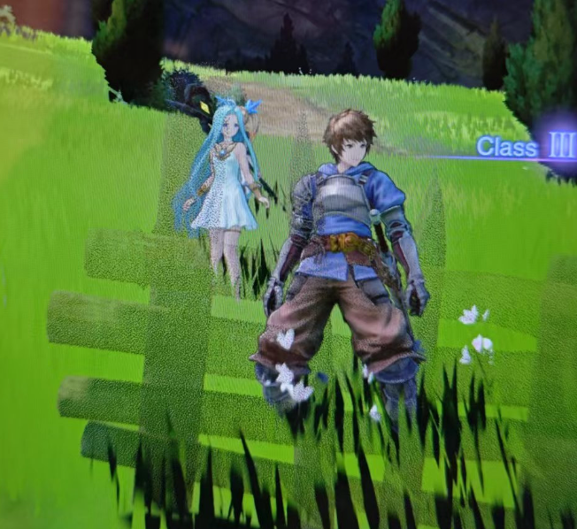

将三方向映射的贴图采样量降为原来1/3 ，即不需要额外多次采样的技术。
本文为原创内容，转载请注明地址。
介绍
三方向映射（Triplanar Mapping），是一项在地形贴图制作和一些需要任意角度覆盖模型时候比较常用的技术，通常来避免纹理的拉伸和接缝。
但是这项技术存在的一个弊端是，由于在每个方向上都会进行一次采样，因此贴图的采样量是常规方法的三倍。而一般来说，对于常规的PBR方案，一个模型上我们存在三张贴图：BaseColorMap、RMA、Normal，因此贴图采样量会扩展到3*3=9次上。
本方案旨在提供一种比较cheap的三方向方案，其采样的贴图数不会额外增加，即对于拥有BaseColorMap、RMA、Normal三张贴图的模型来说，采样数仍然为3。
原理
灵感来源于gdc18上Far Cry 5在地形渲染技术分享中的一个小技术方案，用来降低不同层之间混合的采样数量，他们命名这个技术为”stochastic cliff shading”。中心思想是用随机混合来代替透明度混合。
我们不难发现这项技术在游戏中其实已经有很深入的应用了，包括用来做发丝的渐变和人物的遮挡渐隐。

在一开始这个方案也被我采用在本组项目的地形方案中，来制作不同地形中层与层之间的混合。也确实获得了不错的混合效果，可以替代Alpha Blending.
在后续的地形方案制作，主要是做悬崖贴片的过程中，突然想到或许这东西或许同样能用在三方向映射上？
遂进行验证和实现，最后虽然有部分局限，但是整体的效果还是不错的。最主要的是解决了多次采样的问题，那还要什么自行车~
实现
可以使用抖动数组来完成我们对透明度的处理。
1 | float dither = Dither8x8Bayer( fmod(clipScreen.x, 8), fmod(clipScreen.y, 8) ); |
uv此时因为抖动的原因会在边界混合出计算mipmap等级时候出现跳变，为了效果我们需要用ddx和ddy手动用原uv来计算正确的mipmap等级。
1 | half4 albedoAlpha = SAMPLE_TEXTURE2D_GRAD(_BaseMap, sampler_BaseMap, uv,ddx(uv0),ddy(uv0)); |
对于法线和粗糙度等图的采样也需要这个设置。
一些问题
由于uv采样的不连续，会使得采样器在计算mipmap的时候出现跳变的问题，因此必须自己通过ddx ddy来进行mipmap等级的指定。
法线的特殊处理
和普通的三方向映射一样，我们也需要对法线做特殊处理。由于三方向映射的旋转无关性，我们此时不能使用切线空间来计算法线，应该把法线贴图的采样结果当作一种世界法线，然后再完成法线贴图对每个面的映射效果。
由于我们的法线贴图只进行了一次采样，因此无法做到每个方向的法线贴图的细节混合，因此使用最基本的Swizzle法进行每个方向的法线的映射即可。
此时我们得到的其实是一个六边形上每个面上的法线值，即存在于六个平面上的法线值，我们需要将他与物体实际的法线效果结果，需要进行物体法线和法线贴图的混合。法线的混合
1 | //UDN Blending |